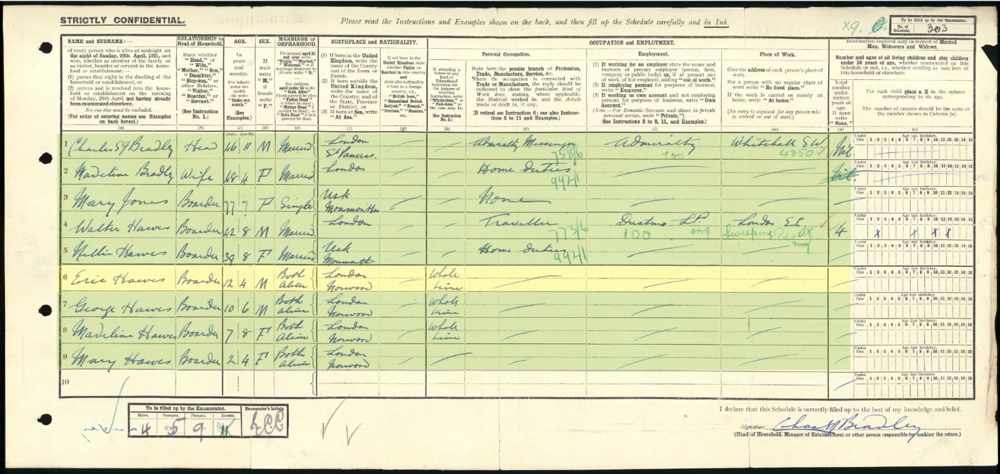

1921 census: the Hawes family at 46 Gipsy Hill
Original census image and index transcript supplied by Antony Greenfield. The index transcribes the address as “46 Gipsey Hill”; the archive uses the modern spelling Gipsy Hill. The address is supplied by the index and is not visible on this schedule image.
Original return

Original image preserved without changes. Family correction: the surname is Hawes. The supplied index uses “Howes”; the family also reports “Howard” as an OCR error. These are not treated as alternative family surnames.
Household
| Name | Age | Relationship to head | Marriage or orphanhood |
|---|---|---|---|
| Charles S. Bradley | 46 years 11 months | Head | Married |
| Madeline Bradley | 48 years 4 months | Wife | Married |
| Mary Jones | 77 years 7 months | Boarder | Single |
| Walter Hawes | 42 years 8 months | Boarder | Married |
| Nellie Hawes | 39 years 8 months | Boarder | Married |
| Eric Hawes | 12 years 4 months | Boarder | Both parents alive |
| George Hawes | 10 years 6 months | Boarder | Both parents alive |
| Madeline Hawes | 7 years 8 months | Boarder | Both parents alive |
| Mary Hawes | 2 years 4 months | Boarder | Both parents alive |
Frances Ellen recorded as Nellie
Nellie Hawes is entered as married, aged 39 years 8 months, born at Usk, Monmouthshire, with “Home Duties” as her occupation. Her association with Walter and the same four children, and the Usk birthplace also recorded for Frances in 1911, strongly support identifying her as Frances Ellen Creese Hawes. Nellie is retained as the name actually entered here. This strengthens the family connection but does not resolve her exact birth date: the age differs from the date attributed to Ellen F. Hawes in 1939.
Walter and the children
Walter is a married traveller aged 42 years 8 months, born in London. An employer name ending in “Ltd” and a London E.C. workplace are entered, but the company name is not securely transcribed. This age is closer to the existing c.1879 family-tree birth date than his age of 30 in 1911; neither census age is substituted for a verified birth certificate.
Eric, George and Madeline are recorded in whole-time education. All four children have “Both alive” in the parental-survival column. This refers to their parents, not to the children’s marital status. Their birthplaces are entered as London, Norwood, with repeated entries beneath Eric’s. The family identifies Madeline here as Gladys Madeline, later known as Sally; she is distinct from Madeline Bradley.
Other household members
Charles S. Bradley is head and an Admiralty messenger; his employer is the Admiralty and workplace Whitehall S.W. Madeline Bradley is his wife, occupied in home duties. Mary Jones is a single boarder, also born in Usk, Monmouthshire. Her relationship, if any, to Frances/Nellie has not been established. A shared birthplace is a research clue, not proof of kinship.
Record reference
Lambeth registration district 25; Norwood sub-registration district 5; enumeration district 42; schedule 303 (visible in the upper right); schedule type E. Ward: Knights Hill. Parliamentary division: Lambeth, Norwood Division. Respondent: Bradley. Details supplied in the index transcript; the full archival piece reference has not been supplied.
Continuity at Gipsy Hill
The address connects this 1921 household with the supplied 1939 register at 46 Gipsy Hill, where Bradley and Hawes names appear again. The two records establish presence on their respective census/register dates; continuous residence between them has not been demonstrated.
Frances Ellen / Nellie · Walter · Eric · George · Madeline · Mary · 1939 register